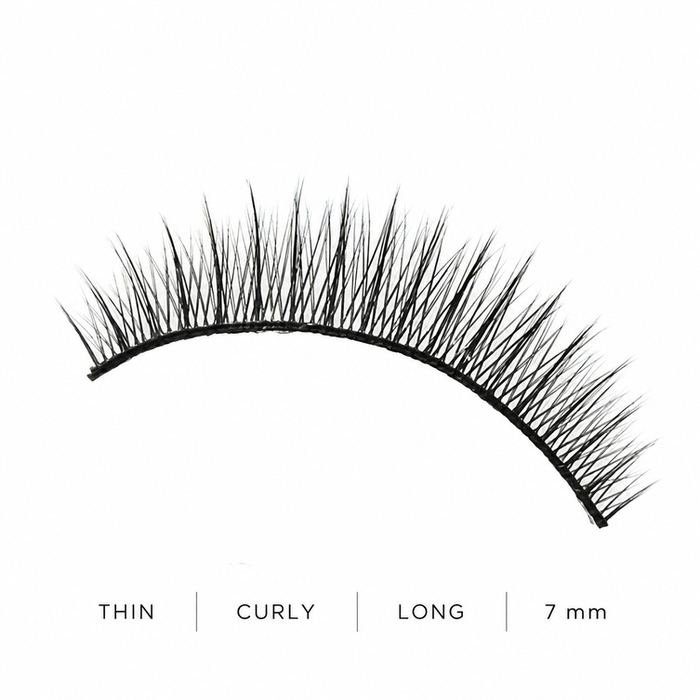
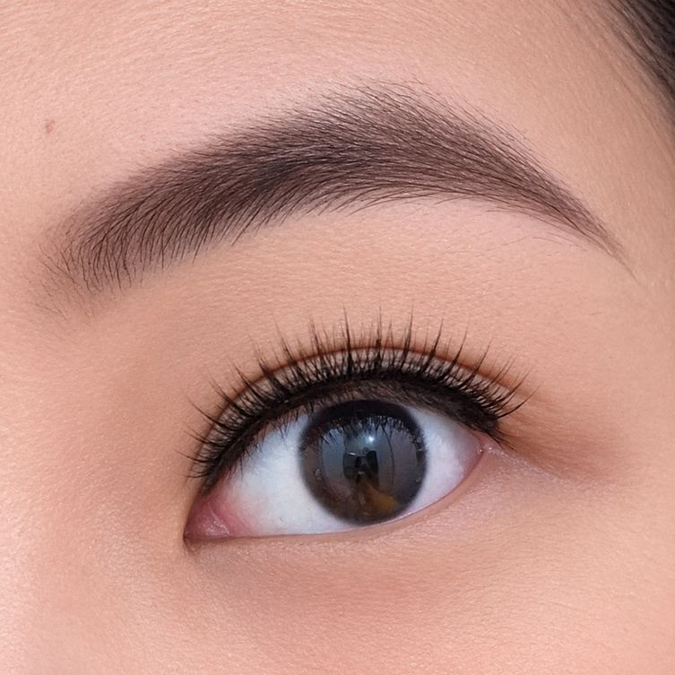
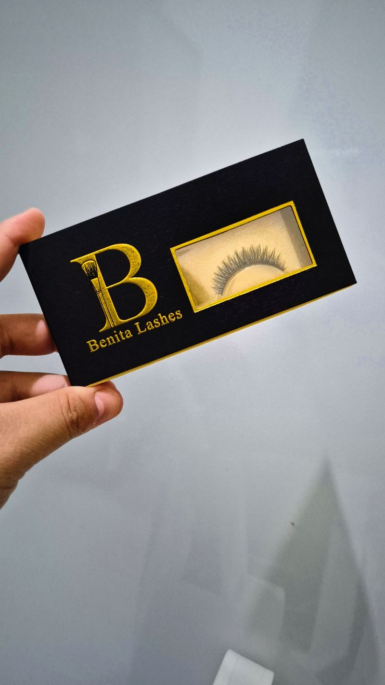
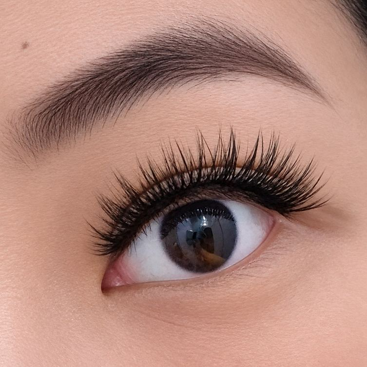
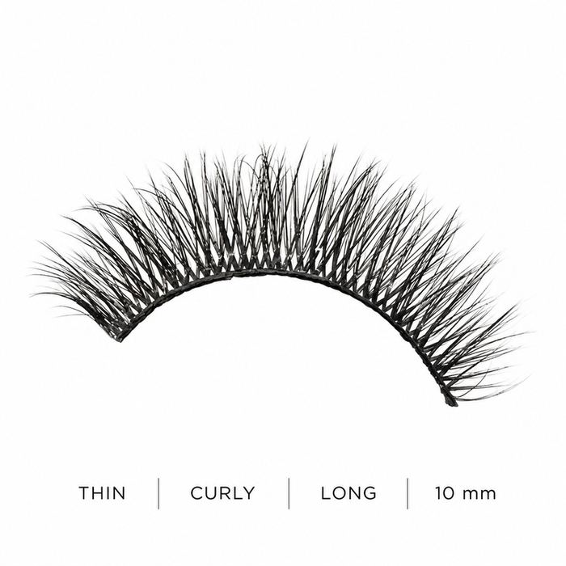
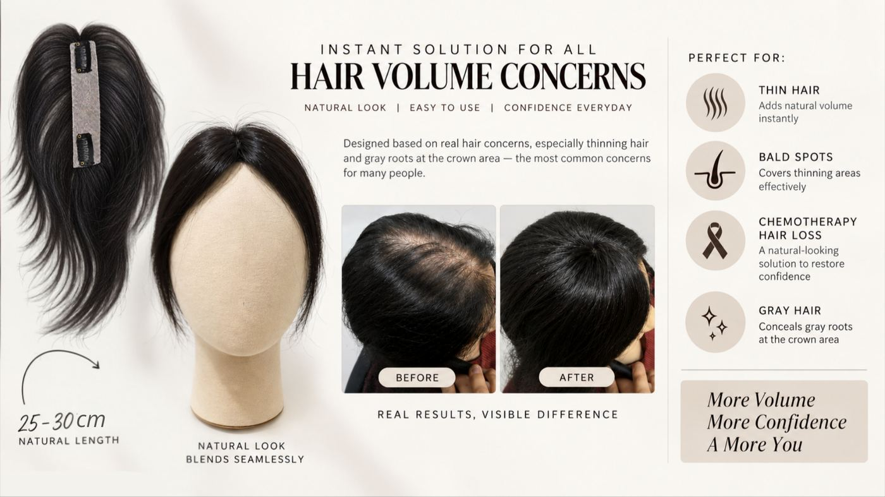
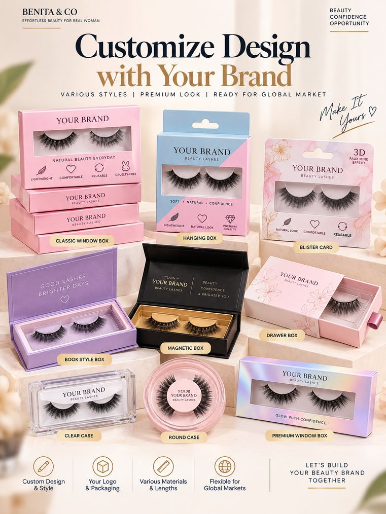

Everyday 7 mm
Thin · Curly · Long · 7 mm
Premium false eyelashes and hairtop, designed by a makeup artist with 15 years of experience and manufactured in Indonesia to export standards.

Benita & Co was established in 2025 as a beauty brand offering practical, natural beauty solutions for women who want to look fresher, more elegant and confident, without looking overdone.
It was founded by Giovani Benita, a makeup artist with over 15 years in the beauty industry. The brand grew from what she saw in women's daily lives: the difficulty of wearing false eyelashes, the loss of confidence that comes with thinning hair, and the wish to look beautiful in a simple, comfortable way.
"Effortless Beauty for Real Woman"
Our philosophy
We believe beauty should feel effortless, not complicated. Every woman deserves to feel confident without following unrealistic standards or spending hours on her appearance.
Our products are simple, accessible and thoughtfully designed for real women and real everyday moments. True beauty is not about becoming someone else. It is about feeling confident enough to be yourself.
Premium eyelashes designed directly by professional makeup artists, based on the real needs of women.

Helping eyes look fresher, alive and beautiful without excessive makeup.



Designed around real hair concerns, especially thinning hair and gray roots at the crown, the most common concerns for many people.

Natural length 25–30 cm, blending seamlessly. More volume, more confidence, a more you.
Create your own lash brand with us. We offer flexible customization for international buyers.
Material options
Synthetic fiber is lightweight, durable and cruelty-free. Human hair is soft with a premium natural look. Pre-glued lashes are ready to use.

Benita & Co products are manufactured in Indonesia with a focus on quality, design flexibility and export readiness. HS Code 6704: wigs, false eyelashes and related artificial hair products.
United States, Canada
United Kingdom, Germany, France, The Netherlands, Poland
Japan, South Korea, Singapore, Malaysia, Brunei Darussalam, Australia
Saudi Arabia, United Arab Emirates
Shipping arrangements can be adjusted to order volume, destination and buyer requirements.
50% deposit upon order confirmation.
50% balance payment prior to shipment.
FOB (Free On Board), shipped from Jakarta, Indonesia.
We are open to discussing suitable arrangements for your destination.
Sea freight for larger and bulk orders.
Air freight for selected international shipments.
DHL or FedEx for samples and smaller shipments.
High-quality false eyelashes with flexible OEM, private label and custom packaging solutions, tailored to buyer requirements.
We welcome flexible partnerships with businesses looking to source, distribute, resell or develop customized false eyelash products:
Talk directly with Giovani Benita, Founder & CEO, for samples, pricing and custom orders.